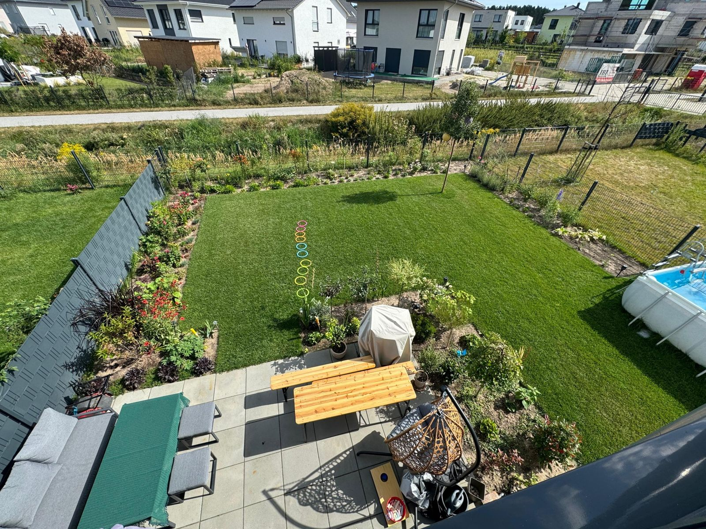
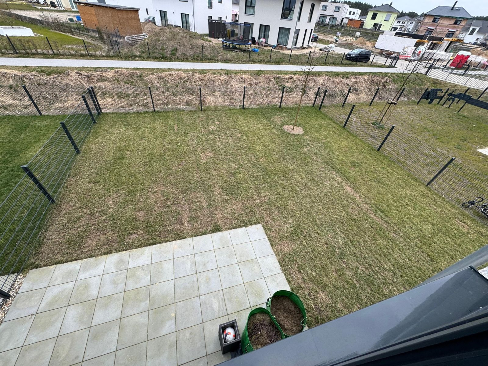
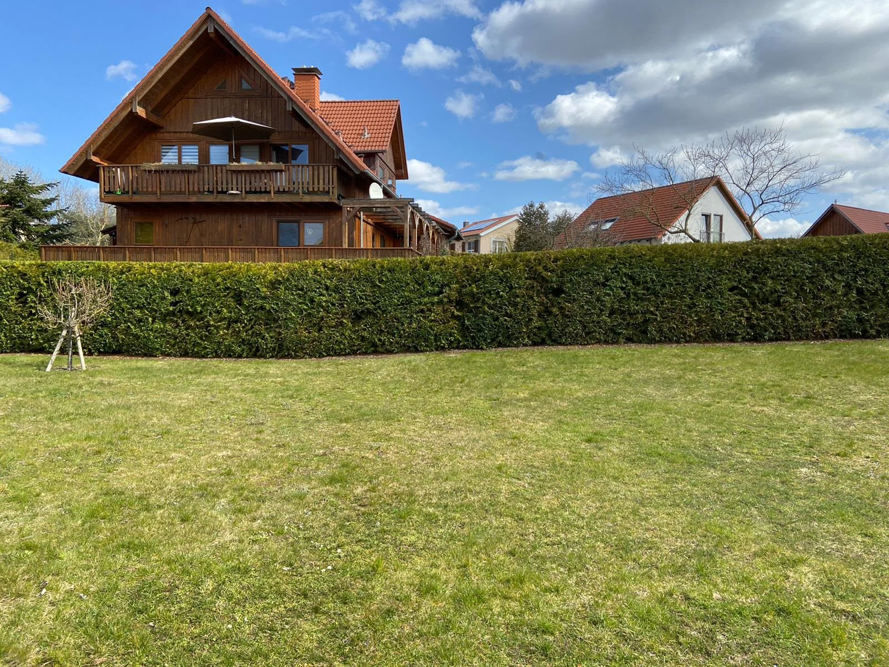
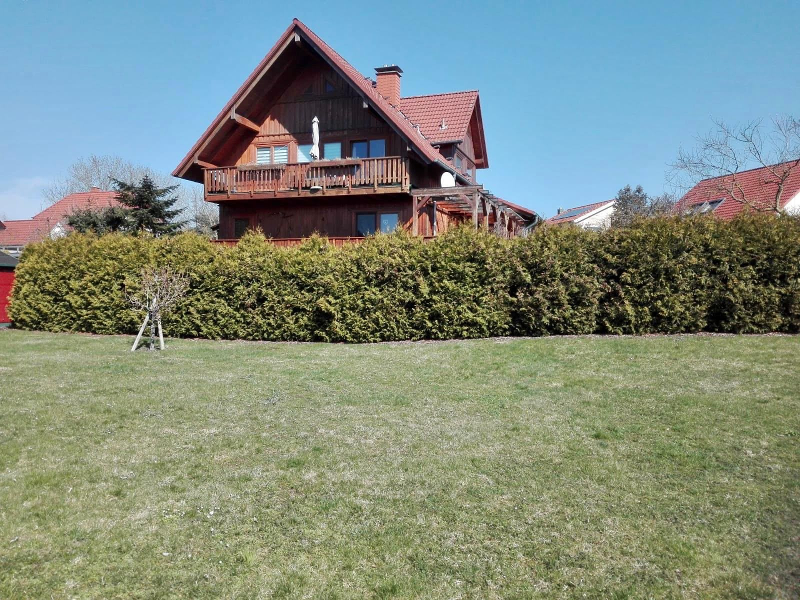

Frühjahrsputz
Laub, Äste und Winterreste entfernen, Beete und Wege freiräumen.
Professionell & Persönlich

Leistungen
Der Garten erwacht. Jetzt ist die beste Zeit für Rasenpflege, frische Beete und einen sauberen Start in die Saison.
Lange Tage, schnelles Wachstum: Ich halte Rasen, Hecken und Beete in Form – auch, wenn Sie im Urlaub sind.
Laub, Rückschnitt, Wintervorbereitung: Jetzt wird der Garten aufgeräumt und fit für die kalte Jahreszeit gemacht.
Ruhezeit im Garten – und die richtige Zeit für Gehölzschnitt, kräftigen Heckenrückschnitt und Frostschutz.
Laub, Äste und Winterreste entfernen, Beete und Wege freiräumen.
Moos und Filz raus, nachsäen und düngen – für einen dichten Rasen.
Rückschnitt vom Vorjahr, damit der Neuaustrieb Platz hat.
Boden lockern, Unkraut entfernen, mulchen und neu bepflanzen.
Rosen und sommerblühende Sträucher fachgerecht zurückschneiden.
Formschnitt mit Rücksicht auf brütende Vögel – vorher wird kontrolliert.
Regelmäßig in der richtigen Höhe, inklusive sauberer Rasenkanten.
Schonender Pflegeschnitt um Johanni (Ende Juni) – nach Nestkontrolle.
Bewässerung von Beeten und Kübeln, während Sie verreist sind.
Unkraut jäten, Verblühtes ausputzen, Beete gepflegt halten.
Rückschnitt frühjahrsblühender Sträucher, damit sie im nächsten Jahr wieder reich blühen.
Feste Termine über den Sommer – Ihr Garten bleibt durchgehend gepflegt.
Laub von Rasen, Beeten und Wegen entfernen – inklusive Abtransport.
Ab 1. Oktober sind auch kräftige Rückschnitte wieder erlaubt.
Auslichten, verjüngen und in Form bringen.
Letzter Schnitt, Herbstdüngung und Laub runter vom Rasen.
Stauden zurückschneiden, abdecken und mulchen.
Schnittgut und Laub werden mitgenommen und entsorgt.
Winterschnitt an frostfreien Tagen – für einen gesunden Austrieb im Frühjahr.
Bis Ende Februar ist auch das Auf-den-Stock-Setzen erlaubt.
Empfindliche Pflanzen mit Vlies und Mulch schützen.
Gemeinsam besprechen, was im Frühjahr ansteht.
Schnittgut wird mitgenommen und entsorgt.
Ergebnisse
Ziehen Sie den Regler, um den Unterschied zu sehen.




Die Hecke im Jahreslauf
Heckenschnitt mit Rücksicht
Hecken bieten Brutplatz, Versteck und Futter. Deshalb schneide ich nach den Vorgaben des Bundesnaturschutzgesetzes (§ 39) – und schaue vor jedem Schnitt genau hin, ob ein Nest besetzt ist.
Besetzte Nester sind das ganze Jahr geschützt – egal, wann geschnitten wird.
Über mich
Ich bin freiberuflicher Gartenpfleger und arbeite am liebsten draußen. Bei mir haben Sie einen festen Ansprechpartner, der pünktlich kommt, ordentlich arbeitet und den Platz so verlässt, wie Sie ihn sich wünschen.
Ob einmaliger Heckenschnitt oder regelmäßige Pflege über die ganze Saison – sprechen Sie mich einfach an.
So einfach geht’s
Schreiben Sie mir kurz per WhatsApp oder E-Mail, was zu tun ist – gern mit Foto.
Ich schaue mir den Garten an und Sie bekommen ein klares Angebot.
Zum vereinbarten Termin wird gearbeitet – inklusive Aufräumen.
Kontakt
Ich melde mich in der Regel innerhalb von 1–2 Werktagen zurück.